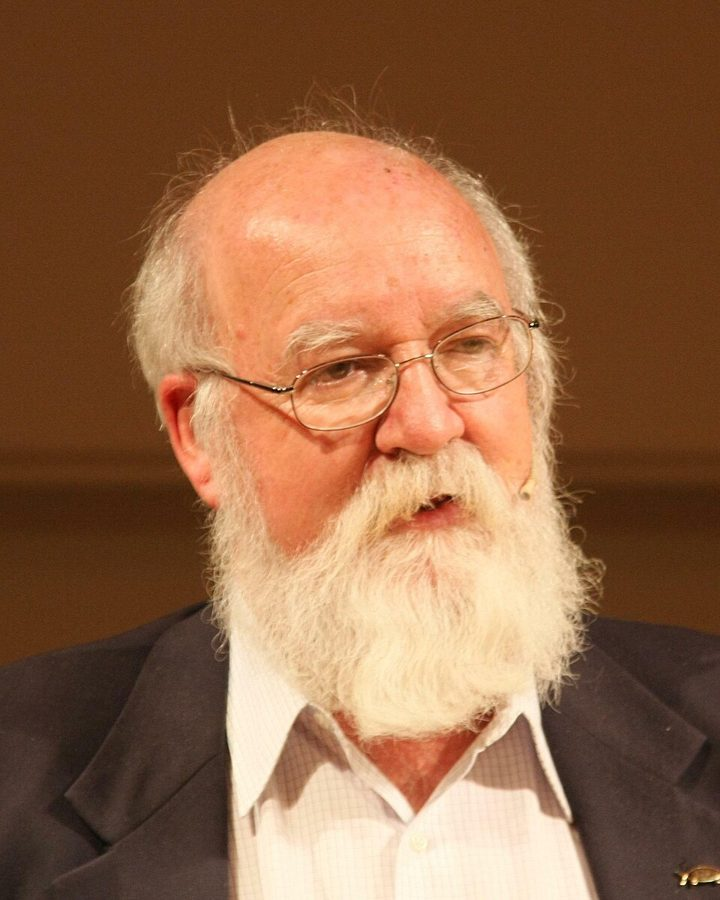
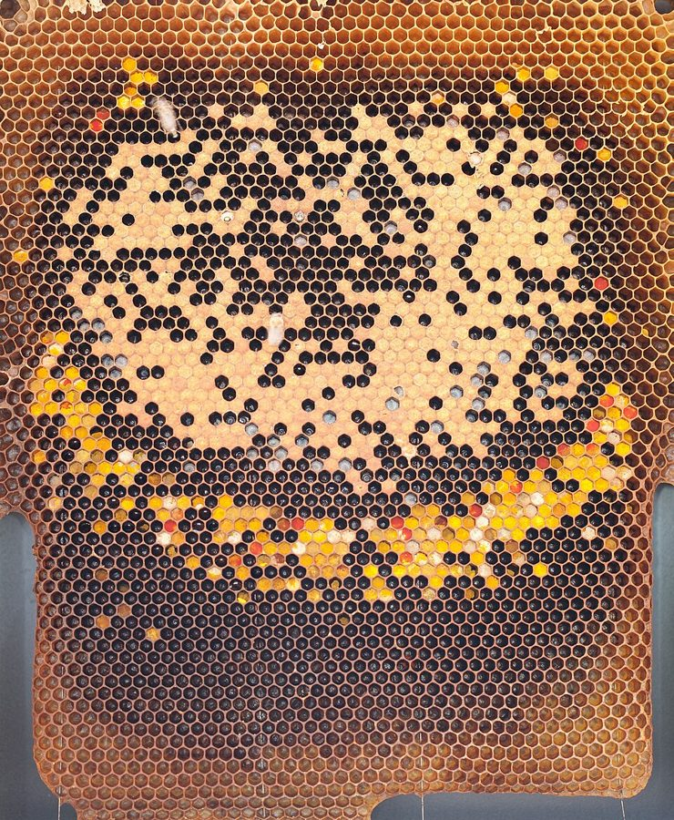
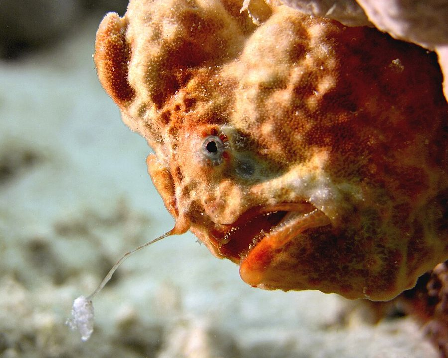
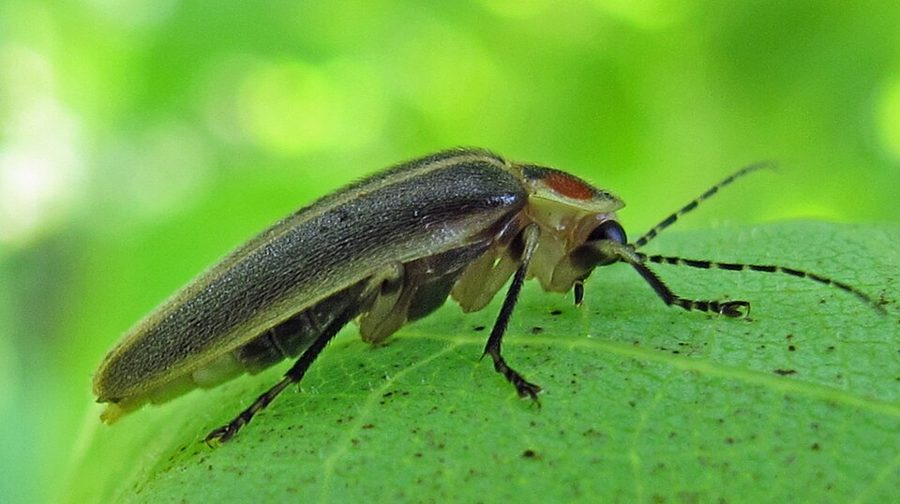

pay the penalty
… and they would pay the penalty.
付出代价（这里是送命）
penalty 不只是罚款。下一句就说了：小熊死了，基因也跟着死在它体内。
第 4 章的后半。上半页讲到基因没法实时操纵身体，只能事先造好大脑、写好规则然后放手。这一页接着问：未来预见不到，基因该给大脑编什么样的程序？Dawkins 从北极熊的白毛讲到水坑边的赌博，再讲学习、模拟和意识；然后回到地面，用一项蜜蜂实验说明「某种行为的基因」是什么意思；最后引出动物的联络和欺骗。读的时候抓两条线：基因对行为的控制到底有多「间接」，以及「某某的基因」「说谎」这些词他是在什么意义上用的。
上半页停在第 24 段：基因像仙女座的外星人，只能事先把指令发出去，给自己造一台快速的「执行计算机」，教它一些通用的策略和窍门。这一页从第 25 段接着讲：这些指令该怎么写，才应付得了预见不到的未来。第 36 段起作者说要「回到地面」，从计算机的比喻转回基因库里的竞争。第 42 段他特意提出联络，说讲利他和自私时还要用到；第 50 段预告下一章要介绍一种思考利益冲突的有力办法，那就是第 5 章的进化稳定策略。
说基因「控制」行为，又说大脑能违抗基因，这两句怎么能同时成立？
读的时候带着这几个问题。不用先找答案，读完回来对照「检查一下理解」。
这一页先顺着上半页的比喻往下走，到中间掉头。§6 从「基因要预测未来」出发，先举一个最简单的例子（北极熊），再把预测换成赌博：水坑、赌注、赔率，顺手预告第 9 章的雌雄。§7 是一架梯子：写死的规则不够用，就教大脑学习，再教它模拟，梯子顶上是意识；第 35 段把这一路收成一句话。§8 开头作者自己说「回到地面」，从比喻跳回基因库，读到这里会觉得突然：他是在给前面所有「基因控制行为」的说法补上一个能检验的含义。§9 又是一跳，从蜜蜂转到联络和说谎，看上去和前面无关，其实是在为下一章的利益冲突铺路。
作者落在哪：基因只能事先给大脑定方针、押注未来，具体决策越来越多地交给大脑，所以控制是间接的，但仍然很强。「某种行为的基因」只是说这个基因让那种行为更可能出现。基因利益不一致的地方，信号就会被拿来骗人，同一物种也不例外。
这一页是原书第 4 章的第 6–9 节。原书各章没有小标题，粗体的节名是本站起的，下面是这一节第一段开头的几个词，在电子书里搜它就能跳过去。读完打个勾。
先把这一页用到、作者默认你懂的几个概念讲一遍。讲的是概念本身，作者拿它推出什么，读原书时自己看。前面讲过的生存机器、等位基因、基因库、时滞，点进去看。
动手之前，先在一个模型里把各种做法试一遍，看哪种结果好。模型不必长得像实物：程序员都知道，棋盘在内存里只是一串数，地图可以只是一张经纬度表，只要能在上面操作、试验、读出结果就行。天气预报、下棋程序往前搜几步，都是模拟。它的对手是「公开的试错」：真去做一遍，错了就承担后果。心理学里有个相近的老词「替代性试错」（vicarious trial and error），是 1930 年代研究大鼠走迷宫的人起的：大鼠在岔路口停下来左右张望，像是在心里先走一遍。模拟要和学习分开：学习是做了以后按结果调整，模拟是做之前先在模型里试。
在这一页：第 30–32 段讲将军、计算机和人怎样模拟；第 33 段推测意识是模拟的顶点；尾注 17 补了 Dennett 和 Humphrey 的看法。
遗传学的老说法，Dawkins 用的是它最窄的意思：在其他条件相同时，带着这个基因的个体，比带着它的等位基因的个体更可能出现某种性状或行为。「蓝眼睛的基因」并不单独造出眼睛，它只是让眼睛的颜色和带另一个等位基因时不同。程序员可以这样想：一个大系统里改一个配置项，某个行为就变了，你可以说这个配置项「管着」那个行为，尽管行为是整套代码一起跑出来的。要和两种误解分开：一是以为行为的全部复杂性都装在这个基因里，二是以为有了这个基因就注定会那样做。这个短语的中文译法见下面的译本勘误。
在这一页：第 36 段给出定义，第 39、41 段借卫生蜂把它说清；尾注 18 换了个说法：基因的差异造成行为的差异。
今天通行叫信号交流或通讯。行为学里，一个个体的动作、声音、颜色或气味改变了另一个个体的行为，就叫联络：鸟鸣、狗摇尾巴、蜜蜂跳舞都是。今天的研究通常还区分「信号」和「线索」：信号是演化出来专门影响别人的，线索只是顺带被人利用（猎物踩断树枝的声音）。和日常说的「沟通」不同，这里不问双方有没有意图，只看效果。对信号的功能，生物学家有过几种看法：传统看法是信号对双方都有利、传递真实的信息；另一种看法是信号是发出者摆布接收者的手段，接收者则学会提防。
在这一页：第 43 段给出定义，作者说这个定义经不起久守，但眼下够用；第 44–50 段讲信号也能被拿来欺骗。尾注 20 改了口。
按在书里出现的顺序排，标题前是节号。只讲到读懂这一页需要的程度。
第 25 段开头说「J. Z. Young 指出过」基因要做类似预测的事，没有给出处。Young 是 20 世纪英国最有影响的神经生物学家之一，用章鱼研究记忆的细胞机制，还发现了枪乌贼的巨大轴突，后人拿它研究神经冲动怎样传导。作者只借了他一句话，后面的北极熊和水坑都是作者自己的例子。
干旱地区的水坑是捕食者守候猎物的地方。第 26 段拿它说明「每个决定都是一次赌博」：去喝水可能被吃，不去会渴死；是熬到很渴再喝个够，还是路过时抿几口，要看捕食者怎么狩猎，而捕食者的打法也在演化。照片里的斑马正面对这样的赌局。

第 33 段的星号指向尾注 17，作者在注里介绍两位学者怎样从「模拟」走到意识。Dennett 认为大脑的硬件是并行的，意识像是跑在上面的一台「串行虚拟机」，就像图形界面是硬件之上一层好用的外壳；作者写注时他的文章还没发表，后来他把这个想法写进了 1991 年的 Consciousness Explained。Humphrey 认为群居动物最难预测的是同伴，于是演化出一只向内看自己的「内在之眼」。作者对两人都有保留。

工蜂不生育，所以要让一个品系的蜂王和另一个品系的雄蜂交配，再看子代工蜂的行为。Rothenbuhler 1964 年前后发表的工作把卫生行为和两对隐性基因联系起来：一对管揭开蜡盖，一对管把幼虫扔出去。下图是第 38 段的推理。尾注 19 补了一句：数据没有正文写的那么整齐，有一群蜂不合理论，他本人在论文里如实写了。
第 46 段作者回忆听过 Gardner 夫妇讲 Washoe 的讲座。Washoe 是一只雌性黑猩猩，1966 年起在内华达大学里诺分校由这对夫妇抚养，学会了一百多到两百个美国手语手势（各家数法不一）；它算不算学会了「语言」，至今有争议。讲座后哲学家争论 Washoe 会不会说谎，作者觉得有更有意思的问题。书里写作 Beatrice，这位研究者的名字其实是 Beatrix。

鮟鱇目的鱼，背鳍最前面的一根棘变成了「钓竿」，末端长着一小团像虫或小鱼的「饵」。鱼自己伏在海底不动，靠饵把小鱼引到嘴边。第 47 段说它在「说谎」：它利用了小鱼爱凑近扭动小东西的习性。
蜂兰属（Ophrys）的兰花，唇瓣的形状、绒毛和气味都像某种雌蜂，雄蜂飞来和花「交配」，顺带把花粉带到下一朵花上，这叫拟交配传粉。花不给蜂任何报酬，是第 48 段说的利用别人的性欲。照片里的这一种在英国多半自花授粉，因为欧洲大陆上替它传粉的长须蜂在英国很少见。

北美的萤火虫，每个物种的雌雄之间有自己的闪光暗号。James Lloyd 1965 年在《科学》上报告：Photuris 属的雌虫会模仿 Photinus 属雌虫的回应闪光，引来 Photinus 雄虫再吃掉。后来 Eisner 等 1997 年发现，Photuris 雌虫还从猎物身上得到一类自己造不出来的防御性类固醇，吃过这种猎物的雌虫，跳蛛就不爱吃了。
按节排，每节前面是分节地图里的节名。标着「每个字都认识」的，是熟词生义、习语和反话，最容易读错。灰色的那几个字是原句里的位置，在电子书里搜它就能找到。
对着中译本（40 周年增订版）读的时候看这一节。下面是译本这几节和这一页尾注里会让人读错的地方：灰字是英文原文那一处的几个词，在英文电子书里搜它；方框里是译本的原句，在译本电子书里搜它。措辞别扭但意思没错的不收。全书的勘误汇总在译本勘误。
… a reason not germane to our discussion …
译本：「不打赌的例子是不怎么合适的」
原文是说：赌场被做了手脚，长远看越赌越穷，这一点的原因和这里的讨论无关，所以下一句说「撇开这个不谈」。不是说「不打赌」这个例子不合适。
… could be called vicarious trial and error …
译本：「好的模拟肯定远胜于盲目的试验和误差」
trial and error 是「试错」：试一下，错了再换。error 是做错，不是测量的「误差」。第 32 段的 overt trial and error（真去试、真犯错）也是这个词，那里说的「致命」指的是犯错。
… What about simulation? Well, when you …
译本：「模拟到底是怎么一回事呢？在我看来」
上一句说生存机器早就发明了透镜、声呐等技术，这一问是：那模拟呢，它们也发明了吗？答案是你自己做难的决定时就在模拟。译文把问题变成「模拟是什么」，还多了原文没有的「在我看来」。
… it involves an infinite regress …
译本：「它牵涉到一个无穷尽的复归问题」
逻辑学术语，通译「无穷倒退」：模型里有自己的模型，模型的模型里又得有模型，没有尽头。「复归」容易读成「回到原处」，后面那句「模型的模型」就接不上了。
… The psychologist Nicholas Humphrey, too, has …
译本：「哲学家尼古拉斯·汉弗莱也曾提出过」
原文是 psychologist。这条注里的哲学家是 Dennett；Humphrey 是从心理学来的，他的说法正是「群居动物要做天生的心理学家」。
… has been a largely cultural phenomenon …
译本：「串行程序的发展已经成为一大文化现象」
原文是说：Dennett 认为这套「串行软件」的发展主要是文化上的事（不是基因直接造的），作者对此有疑问。不是说它成了一种流行的文化现象。
… advised to consult Dennett’s own account when …
译本：「直接与丹尼特探讨」
原文是建议读者等 Dennett 自己的文章发表后去读，别只信作者凭记忆的转述（他说这份转述可能不完整，甚至添了油加了醋）。不是请读者去找 Dennett 本人讨论。
… A gene for altruistic behaviour means any …
译本：「一个操纵利他行为的基因」
原文的 for 只是「和某种行为有关、让它更可能出现」。第 39、41 段和尾注 18 都在强调这个基因并不单独造出、更不「操纵」那种行为，「操纵」恰好说出了作者要否认的意思。尾注 18 又换成「导致」，读时都按「某种行为的基因」理解。
… It serves as a model for how …
译本：「这是一个说明如何继承利他行为的典型例子」
原文说：卫生行为并不明显利他，只能当作一个模型，说明利他行为「可能」怎样遗传。作者刚刚承认利他行为的遗传当时没有实验证据，「典型例子」读起来像已经证明了。
… all that a gene does is encode …
译本：「其他基因都是编码蛋白质」
这是批评者的反问：一个基因能做的不过是编码一条蛋白质链，怎么会有「利他的基因」？译文成了「其他基因都编码蛋白质」，好像利他基因是个例外，作者接下来的回答就对不上了。
… genes were still there but were recessive …
译本：「但这些基因已变成隐性基因了」
基因不会变成隐性。原文是：卫生基因一直在，只是它本来就是隐性的，和另一个显性的等位基因在一起时表现不出来，就像蓝眼睛的基因。
… presumably possessed the uncapping gene …
译本：「其数量是原来的两倍」
原文括号里的 in double dose 是说揭盖基因有两份（一对染色体上都是它）。隐性基因要有两份才表现得出来，所以这组蜂会揭盖。不是基因数量比原来多了一倍。
… of apparently totally non-hygienic bees might …
译本：「显然完全是不卫生的蜂群里」
apparently 在这里是「表面上、看上去」。Rothenbuhler 正是怀疑这组蜂表面之下藏着会扔幼虫的蜂，后来亲手揭盖证实了。同一段末尾的「看起来是不卫生的」才是对的。
… Out of the many colonies that, according …
译本：「在许多品系中不应该出现卫生品系特有的行为」
colony 是一窝蜂（一个蜂群），不是品系。原文说：按理论不该卫生的许多蜂群里，有一群偏偏卫生。例外只有一群，下文的「那个异常的品系」也应读作那一群蜂。
… The chain of causes could even turn …
译本：「可以证明行为甚至包括学习过程」
原文是：从基因到行为的那条因果链，甚至可能经过学习。意思是即使基因靠「让蜜蜂学会」起作用，它仍然算「揭盖的基因」。不是「证明」了什么。
… giving bees a taste for infected wax …
译本：「它首先让蜜蜂尝到受感染的蜂蜡的味道」
a taste for 是「喜欢、有嗜好」。设想是：基因让蜜蜂爱吃病巢上的蜡，于是吃蜡成了奖赏，蜜蜂会一再去揭。「尝到味道」漏掉了「喜欢」这一层，下一句的「有好处」就没了来由。
… a single gene, other things being equal …
译本：「一个基因，凭其本身的力量」
原文正相反：一个基因在其他条件相同、许多别的基因和环境因素都在场时，比它的等位基因更可能让个体去救人。整段都在说基因不是单独起作用。
… best seen as neither informative nor deceptive …
译本：「既不是有益的，也不是欺骗性的」
informative 是「传递信息的」，不是「有益的」；后面的 manipulative 是「操纵性的」。这条注是作者 1989 年的改口：多数信号不是在告诉对方真或假的信息，而是在摆布对方。两个词一错，改口就看不出来了。
… By influence I mean direct causal influence …
译本：「我所讲的影响是指直接的、偶然的影响」
causal 是「因果的」，casual 才是「偶然的」，两个词只差字母的次序。原文的定义是：一方直接造成另一方行为或神经状态的改变，才算联络。
… from subsonic rumblings to ultrasonic squeaks …
译本：「从人类能够听到的亚音速的、低沉的隆隆声」
原文说座头鲸的歌覆盖人耳能听到的整个频率范围，低到次声的隆隆声、高到超声的尖叫。subsonic、ultrasonic 在这里说的是频率，「亚音速」「超音速」是飞行速度。
… animal behaviour, altruistic or selfish, is under the control of genes in only an indirect, but still very powerful, sense.— §7 第 35 段。本站译：动物的行为，无论利他还是自私，受基因控制只是在一种间接的、但依然非常强大的意义上。
这是全章的落点，口气是认真下判断。关键在两个限定要一起读：indirect 和 very powerful。这句话常被各取一半：批评者只引「受基因控制」，说他是基因决定论；替他辩护的人只引「间接」，好像基因无关紧要。作者两边都要：基因定下大脑怎么造，所以权力是最终的；每一刻的决策归大脑，所以控制是间接的。下一句「定方针的和执行的」就是这个意思的比喻。
It may well be that all animal communication contains an element of deception right from the start …— §9 第 50 段。本站译：很可能，一切动物的联络从一开始就含有一点欺骗的成分……
口气是推测，又带一点挑衅。may well be 是「很可能」，an element of 是「一点成分」，都不能丢：作者没说动物的信号都是谎言，说的是因为利益总有冲突，信号里总掺着一点对自己有利的歪曲。这句常被读成「动物都在撒谎」。1989 年他又改了说法，把信号看成操纵（见尾注 20）；后来的研究更关心的是另一半问题：信号为什么大多还靠得住（见「对照今天」）。
正文里的星号是 1989 年第二版加的，点了跳到书后的尾注。下面是这一页的每个星号：注里说了什么，值不值得现在就点开。英文是星号前紧挨着的几个词，在电子书里搜它就能找到那个星号。
… must include a model of itself.*
作者说他 1988 年的一次讲座讲过「大脑模拟世界」，仍不清楚它对意识这个难题帮得上多少忙。注的大半在讲 Dennett：先用苹果电脑的图形界面解释「虚拟机」，用一位棋手轮流应付二十个对手解释「串行」，再说 Dennett 认为人脑是并行硬件上跑的一台串行虚拟机。最后介绍 Humphrey 的「内在之眼」。作者对两人都只信一半。程序员读来会很亲切，值得点开。
… make them likely to behave altruistically.*
回应一种常见的不安：一个基因只编码一条蛋白质链，怎么能「管」复杂的利他行为？作者答：说某种行为的基因，只是说这个基因一变，行为跟着变。他设想：鸟本来就有喂巢里张嘴叫的小东西的本能，一个突变只要让雏鸟提早启动这套本能，它就会去喂弟妹。复杂行为不必从头发明，只是旧行为的一点小改动。值得点开，两段就说完了。
… showed perfectly normal throwing-out behaviour.*
注很短。作者说，要是初版有脚注，他会像 Rothenbuhler 本人那样交代：结果没有正文写的那么整齐，按理论不该卫生的许多蜂群里有一群偏偏卫生。Rothenbuhler 说不能无视这个结果，但假说仍建立在其余数据上；突变是一种可能的解释，不过可能性不大。读正文第 38 段那句「最漂亮的结果」时，记得打个折扣。
… can be broadly labelled communication*
作者说他已经不满意这一节的写法。他和 John Krebs 在两篇文章里主张：多数动物信号既不是传递信息，也不是欺骗，而是操纵，借对方的肌肉替自己办事；夜莺的歌不是信息，是催眠般的游说。信号在「读心」和「操纵」的较量里演化。他还说，对 Zahavi 截然不同的看法，他在第 9 章的尾注里比初版宽容得多。读 §9 一定把这条注放在旁边。
读完这一页的几节再看。下面是作者在这几节里的论点，由本站按论点重新组织，不按原书的顺序；每条下面是依据所在的段落，拿不准就回书里那几段再读一遍。
造胚胎时，未来的危险预见不到，基因只能做笼统的「预测」，比如北极熊的白毛。每个决定都是赌博，基因的事是事先给大脑编好程序，让它平均下来赌对；动物不必有意识地算，赌得对的个体活得多就够了。
§6 第 25–26 段学习让基因少写细则，只规定什么算好、什么算坏；模拟让动物先在脑子里试，比公开试错安全又快。作者推测意识是模拟把自己也包括进去的结果，但称之为最深的谜，并说这个解释他自己也不满意（1989 年的尾注补了 Dennett 和 Humphrey，仍说不确定）。
§7 第 28、30–33 段基因决定神经系统怎么造，由此握着对行为的最终权力；每时每刻的决定由神经系统做。基因定方针，大脑执行，而且大脑接管的方针越来越多，甚至能违抗基因，比如不生那么多孩子（他马上说，人在这点上是特例）；「你看着办」这个终点还没有物种走到。
§7 第 34–35 段作者承认利他行为的遗传当时没有实验证据，于是拿不明显利他的卫生蜂当模型：Rothenbuhler 推测两个基因分管揭盖和扔出，亲手揭盖验证。这类基因只指其他条件相同时让行为更可能出现的基因，中间经过学习也无妨（尾注 18 说得更直白：基因的差异造成行为的差异；尾注 19 补了一群例外的蜂）。
§8 第 36、38–41 段「说谎」只指效果上相当于欺骗。拟态昆虫、鮟鱇、蜂兰、Photuris 萤火虫都在利用别人的联络系统；同一物种里也会有，子女骗父母、配偶相骗；很可能信号从一开始就含着欺骗（1989 年的尾注改说：多数信号最好看作操纵）。
§9 第 46–50 段合起来：这一页把「基因控制行为」收成了一个温和得多的说法：基因不牵线，只定方针、押注；「某种行为的基因」只是说差异。后面几章说「基因让动物如何如何」时，都要按这个意思读。
第 4 章合起来：身体是基因的群落，却作为一个整体行动，所以作者此后用「方便的语言」把个体说成在争取自己基因的利益。动物靠肌肉和神经系统做快速动作，大脑在功能上像计算机。基因不能实时操纵行为，原因是时滞：它们只能像下棋程序的作者、像仙女座的外星人那样，事先造好大脑、定好规则然后放手。于是基因只能押注未来，把越来越多的决策交给会学习、会模拟的大脑，控制间接而强；「某种行为的基因」指的是让行为更可能出现的差异。最后，凡基因利益不一致，联络就会被拿来欺骗。
这本书 1976 年出版。下面挑出这一页里能被后来的研究检验的说法，分「书里 / 当时 / 今天」三栏，并给一个结论。结论判的是标题里「书里的说法：」后面那一句。全书的这一节汇总在对照今天。
读完作者的论点，再看它站不站得住。每一块摆出三样：主流怎么看，作者怎么看，本站的评论。最后一句是本站对这一页的总体判断。
主流看法：今天的生物学既不认为行为由基因写死，也不认为和基因无关。Polderman 等 2015 年汇总五十年的双生子研究，各种性状的平均遗传力约为一半；分子遗传学又发现，典型的行为性状牵涉大量效应很小的遗传变异（Chabris 等 2015 年称之为行为遗传学的「第四定律」）。
作者的看法：基因决定神经系统怎么造，所以握着最终的权力；但具体决策归大脑，大脑还在接管越来越多的方针，甚至能违抗基因（第 34–35 段）。下棋程序和仙女座的比喻，是要换掉「木偶线」的图像。
本站的评论：这个立场比批评者描绘的「基因决定论」温和得多，和今天「影响真实但分散、间接」的数据也合拍。比喻有两处要打折：程序员有意图、懂棋，基因没有；程序员能随时改程序，基因的「改版」只能靠一代代淘汰。「违抗基因」这一页只一句带过，大脑违抗的那股力量从哪来，作者说人是特例，留到第 11 章的觅母再回来想。
主流看法：演化生物学和科学哲学里，按「差异」理解「X 的基因」是常见用法。争议多在日常用法：报道里的「某某基因」常被读成一个基因决定一种行为，而今天的研究发现行为几乎都是许多小效应基因加上环境。
作者的看法：「某种行为的基因」只指在其他条件相同时，比它的等位基因更可能让那种行为出现的基因，不管中间经过什么（第 36、39、41 段）；尾注 18 说得更直白：基因变了，行为跟着变。
本站的评论：定义在逻辑上站得住，作者也从一开始就把它限得很窄。弱点在证据：他自己说利他行为的遗传当时没有实验证据，卫生蜂又不明显利他，只是一个模型，后来连这个模型的「两个基因」都被改写成了多个。所以这一页证明的是「这样说话不荒唐」，不是「利他的基因已经找到」。后面几章说「利他的基因」时，要记得它是推理用的假想单位。
主流看法：意识怎样产生，今天没有定论。Seth 和 Bayne 2022 年的综述列了四大类理论（高阶理论、全局工作空间、再入和预测加工、整合信息论），说它们彼此什么关系、能不能用实验分辨都还不清楚。和作者思路最近的是「自我模型」一路，比如 Graziano 的注意图式理论：大脑给自己的注意建了一个简化模型，我们体验到的觉知就是它。
作者的看法：模拟能力的演化似乎在主观意识里达到顶点，也许大脑的模拟完整到必须包括自己时，意识就出现了；他称之为现代生物学最深的谜，并说这个解释不能令他满意（第 33 段）。
本站的评论：作者的分寸对：提了一个猜想，标明是猜想，还自己指出了毛病（无穷倒退）。这个猜想今天看并不过时，「大脑给自己建模」是好几种理论共有的成分。但它说的是意识可能是怎么来的、有什么用，没有回答为什么会有主观感受。读这一段，把它当作一个有远见的提问，不要当作结论。
本站的总体看法：这一页最值得带走的是两个限定：基因对行为的控制是间接的，「某种行为的基因」只是说差异。两点今天看都站得住，也是读后面各章的钥匙。要打折扣的是证据：卫生蜂是模型而不是利他，两基因已被改写；意识那段是猜想；「信号多含欺骗」作者自己改过口，后来的研究更关心信号为何可靠。
先在心里答，再点开。答错的那题，回书里把对应那一节再读一遍。
白毛是写死的预测：基因直接造出来，赌未来又冷又白，赌错了就死。怎么喝水是临场的决策：基因只能事先给大脑编好倾向，让它在当时的情况下赌，平均下来赌对。
学习是做了以后按奖惩调整，基因只需规定什么算好、什么算坏，不必写细则。模拟是做之前在脑子里试，省掉公开试错的时间、体力和可能致命的错误。
基因决定大脑怎么造、定下方针，所以握有最终的权力；具体决策交给大脑，大脑越发达接管的越多，就可能做出对基因不利的事，比如少生孩子（作者说人在这点上是特例）。
按两个基因的假说，缺揭盖基因的蜂即使有扔出基因也表现不出来，盖子揭不开就无从扔起。Rothenbuhler 亲手替它们揭开蜡盖，果然有一半把幼虫扔了出去。
算。只要其他条件相同时，有这个基因的蜂会揭盖、没有的不会，它就是「揭盖的基因」；中间经过学习也不要紧。
他只看效果：报警的鸟因此独吞了食物，别的鸟按有鹰的情况飞走了。他不问它有没有骗人的念头；哲学家关心的是有意识的欺骗。
欺骗出现在个体之间基因利益不一致的地方，不只在捕食者和猎物之间。同种的个体，包括亲子、配偶、兄弟，基因的利益也不完全一致。
用一句话说这一页，写给一个没读过的人。
想一想：你写过或用过的系统里，有没有一个「事先写好规则、运行时谁也管不着」的东西（定时任务、推荐算法、自动交易）？你交给它的是具体指令，还是一个目标加几条建议？它做过你没预料到的事吗？
读过又忘了，从这里想起来。挑的是这一页最值得记住的模型、动物和说法，不按原书顺序；每条后面是节号，想细看就回书里那一节。全书各页的这一节都收在全书回顾。
一句话：基因不牵线，只能事先给大脑定方针、押注未来；说「某种行为的基因」只是说差异；基因利益不一致的地方，信号就会被拿来骗人。
基因「预测」下一代的世界又冷又白，于是造出厚而白的毛；要是北极突然变成沙漠，小熊和它体内的基因一起完蛋。所有预测都是赌博。
§6基因定方针，大脑执行；大脑越发达，接管的方针越多，甚至能违抗基因。终点是一句「你看着办」，还没有物种走到。
§7有的蜂群会把病幼虫揭盖拖出去扔掉。Rothenbuhler 推测两个基因分管揭盖和扔出，亲手揭盖验证；尾注承认有一群例外，后来的研究找到更多基因。
§8揭盖的基因也许只是让蜜蜂爱吃病巢的蜡。即使如此，它仍是「揭盖的基因」：说某种行为的基因，不管中间经过什么。
§8Photuris 雌虫模仿 Photinus 雌虫的闪光暗号，把雄虫引来吃掉。作者拿它说明：一有联络系统，就有人利用它。
§9